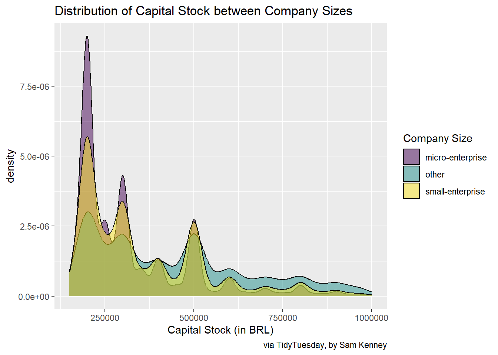

Homework 01
TidyTuesday Section
Explore the week’s TidyTuesday challenge. Develop a research question, then answer it through a short data story with effective visualization(s). Provide sufficient background for readers to grasp your narrative.
Code
company_id company_name
1 41273639 MH MATERIAIS DE CONSTRUCAO LTDA
2 41274138 CLINICA ESTETICA CAXIAS DO SUL RS LTDA
3 41274505 G P CONSTRUCOES E SERVICOS LTDA
4 41274745 UNICREDIT BANK SAO PAULO CONSULTORIA UNIPESSOAL LIMITADA
5 41274856 PRODUCON PRODUTOS PARA CONSTRUCAO LTDA
6 41274914 HSG DISTRIBUIDORA DE BEBIDAS LTDA
legal_nature
1 Limited Liability Business Company (LLC)
2 Limited Liability Business Company (LLC)
3 Limited Liability Business Company (LLC)
4 Limited Liability Business Company (LLC)
5 Limited Liability Business Company (LLC)
6 Limited Liability Business Company (LLC)
owner_qualification capital_stock company_size
1 Managing Partner / Partner-Administrator 1000000 small-enterprise
2 Managing Partner / Partner-Administrator 200000 micro-enterprise
3 Managing Partner / Partner-Administrator 500000 small-enterprise
4 Managing Partner / Partner-Administrator 159600 small-enterprise
5 Managing Partner / Partner-Administrator 200000 micro-enterprise
6 Managing Partner / Partner-Administrator 300000 small-enterprise 0% 25% 50% 75% 100%
1.500001e+05 2.100000e+05 4.000000e+05 1.000000e+06 1.000000e+12 Research Question: How does capital stock vary by company size?
Code

This dataset from TidyTuesday represents a variety of aspects about Brazillian companies. It includes capital stock in BRL of each company, as well as company size. Company size is categorized as micro-enterprise, small-enterprise, and other. This dataset is highly skewed, with most capital stock values being below 1,000,000 BRL, and some values at 999,999,999,999 BRL. To visualize the standard relationship between stock and company size, only the bottom 75% of values were used. Of these values, most of the higher stocks (over 600,000 BRL) are held by other-sized companies. All three company sizes are concentrated at around 200,000 BRL, and density quickly decreases at around 300,000 BRL.